Standings
Race position and timing
DDU
Driver display unit
Fuel
Fuel calculator
Tire
Tire health, temperature, pressure and laps (only shows on pit wall update)
Inputs
Driving inputs
Relative
Relative timing
Cover
Cover overlay
Weather
Weather conditions and track information
Flags
Displays active iRacing session flags
Delta
Lap time delta comparison to best lap

Radar
Proximity radar for nearby cars
Track Map
Track map with live car position
Pit Entry
Distance to pitlane entry